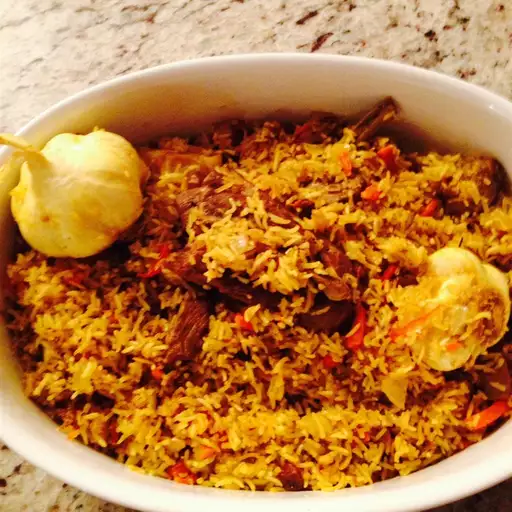

Plov (Lamb and Rice Pilaf)

Description
Plov, a revered dish across Central Asia and the Caucasus, is a heavenly combination of succulent lamb and aromatic rice pilaf. The dish is masterfully prepared by searing tender pieces of lamb until golden brown, then simmering them with fragrant spices like cumin, coriander, and turmeric. The seasoned meat is then layered with long-grain rice and cooked together to create a harmonious blend of flavors. As the rice absorbs the savory juices from the lamb, it becomes infused with rich taste and delightful aroma. Often garnished with caramelized onions, raisins, and carrots, Plov is a celebration of Central Asian culinary heritage that leaves a lasting impression on anyone fortunate enough to savor its exquisite taste.
Plov's significance extends beyond its delectable taste; it is a dish deeply rooted in cultural traditions and social gatherings. Commonly served at weddings, celebrations, and family gatherings, Plov holds a special place in the hearts of the people of the region. The art of cooking Plov is passed down through generations, and each family may have its own cherished recipe, adding a touch of nostalgia and personal history to this beloved dish. Whether enjoyed at a festive occasion or a cozy meal with loved ones, Plov stands as a symbol of unity, hospitality, and the timeless connection between food and community.
Ingredients
- 2 cups basmati rice
- 4 heads garlic, whole
- ½ cup vegetable oil
- 2 pounds boneless leg of lamb, cut into 3-inch pieces
- 2 large onions, thinly sliced
- 5 large carrots, coarsely grated
- 2 tablespoons cumin seeds
- 2 tablespoons coriander seed
- ½ cup fresh barberries
- 1 teaspoon whole black peppercorns
- 2 cups boiling water to cover
- 2 tablespoons salt
Steps
- Place basmati rice in a large bowl and cover with warm water. Set aside. Wash heads of garlic. Set aside.
- Heat vegetable oil in a dutch oven or large skillet over high heat until smoking, then add lamb, turning occasionally until the lamb is evenly browned, about 10 minutes. Stir in the onions; cook and stir until the onion has softened and browned, about 10 minutes. Stir in the carrots; cook and stir until the carrots have softened, about 10 minutes. Sprinkle with cumin, coriander, barberries, and peppercorns. Drop whole garlic heads into the mixture, stirring to evenly distribute ingredients. Reduce heat to medium. Cover and cook for 30 minutes.
- Wash and drain basmati rice with hot water. Pour cleaned rice over the lamb mixture in an even layer. Slowly pour in the boiling water. The rice should be covered with about 3/4 inch of water. Do not stir. Season with salt, and reduce heat to medium-low. Cover and cook until rice is tender, and the liquid has been absorbed, about 20 minutes. Stir rice and lamb together, and serve with the garlic heads on top.